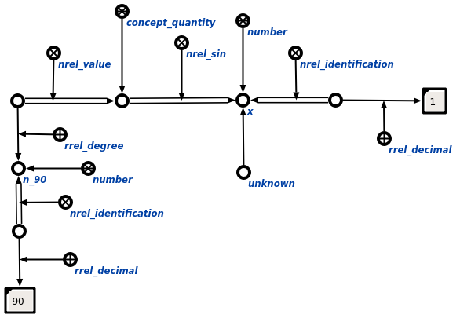

Задачей scp-программы вычисления тригонометрических выражений является вычисление тригонометрических выражений. Первым входным параметром данной scp-программы является узел величины, для которого вычисляется значение тригонометрической функции, вторым - узел числа, являющийся значением тригонометрической функции, третьим - сообщение об успешности выполнения scp-программы, четвертым - множество, в которое входит неизвестный параметр связки тригонометрического отношения. В ходе выполнения программы явно указывается связь со следующими ключевыми узлами: отношениями значение* и идентификация*, использующимися в цепочках значения и идентификации для величин и чисел соответственно, а также порядковым атрибутом 2' на этапе извлечения значения sc-ссылки.
